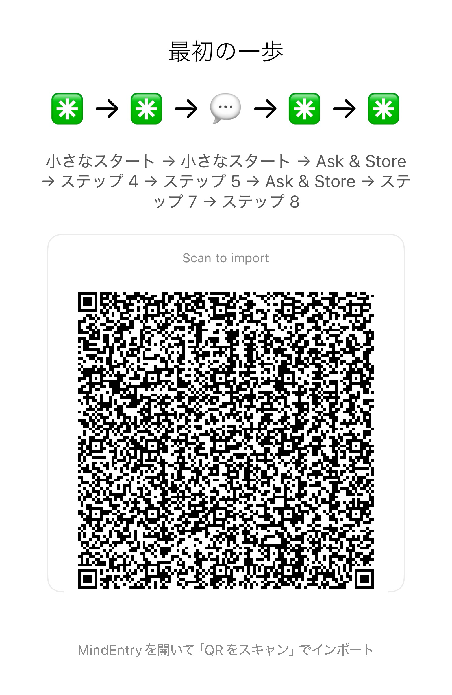

人生の最適化ではなく、認知リセット。
思考が過負荷になったり、ループしたり、フリーズしたり、行き詰まった瞬間のための、小さなステップ型リセット。
リセット方法そのものも、手順を覚えなければならない時点で認知負荷になることがあります。 CogniHack は MindEntry 上で動作することで、そのシーケンス自体を外部化します。
最終更新: 2026-06-02
多くの「ライフハック」は、より良い計画を立てること、より深く考えること、より整理すること、あるいは自分自身を最適化することを求めます。
しかし、心が過負荷になっていたり、思考がループしていたり、固まってしまったり、行き詰まっているときには、考えることを増やすほど状況が悪化することがよくあります。
そんなときに必要なのはアドバイスではないかもしれません。 ただ次の一歩を目の前に置いてもらうことかもしれません。
CogniHackとは、 MindEntry 上で実行される認知リセットのシーケンスです。 そのステップの中では、他のMINDBEBOPアプリは使用しません。
感覚への注意を向けるリセット、小さな身体的アクション、グラウンディング手法、あるいは Your Situation や Your Step のような Stateful ステップを含むことがあります。
シーケンスの途中で MindFlipOut、 MindShoutOut、 MindZoneOut、 MindBackOut、 MindEaseOut、 または MindBackyard などの別のMINDBEBOPアプリを開く場合、それはRecipeになります。
MindEntryがシーケンスを保持するため、次に何をするかを覚えたり、整理したり、判断したりする必要はありません。
ただ次の目に見える一歩に従ってください。
一部のCogniHackはStateful Recipesです。
Stateful Recipesは、あらかじめすべての詳細を必要とする代わりに、実行中に「今大切なこと」を尋ねることができます。
レシピが構造を保持します。 現在の状況を提供するのはあなたです。
その答えは、残りのシーケンス全体で利用されます。
Stateful CogniHackは次のようなことを尋ねる場合があります。
これにより、リセットの手順を頭の中で保持する必要がなくなり、同時にその時々の状況にも適応できます。
状況: 不安、思考ループ、ADHDフリーズなどによってワーキングメモリが過負荷になり、思考が自分の内側に閉じ込められている状態。
5-4-3-2-1 グラウンディングは、もともと感覚を使ったリセット方法として知られています。 ですが、過負荷状態では、その順番を覚えること自体が新たな負荷になる場合があります。
これを MindEntry 上で実行することで、CogniHackになります。 必要なのは、一度に表示される一つのステップに従うことだけです。
CogniHackとして実行する:
このレシピを MindEntry Recipe Runner にインポートしてください。 一画面、一ステップ。順番を覚える必要はありません。
方法1: QRコードを読み込む

方法2: コードをコピーして MindEntry にペースト
状況： やるべきことは分かっているのに、始められない。 タスクが大きすぎたり、複雑すぎたり、重たく感じたりする。 始める代わりに、気づけばスクロールしたり、整理したり、調べたり、やることについて考え続けたりしている。
先延ばしを断ち切る方法として、2分ルールがよく使われます。 しかし、完全に固まってしまっているときは、タスクを小さく分解すること自体が新たなタスクになってしまうことがあります。
これをMindEntryで実行すると、 Stateful CogniHackになります。 構造は同じままですが、その時のタスクは実行中に与えられます。
CogniHackとして実行する:
このレシピを MindEntry Recipe Runner にインポートしてください。 一画面、一ステップ。順番を覚える必要はありません。
方法1: QRコードを読み込む

方法2: コードをコピーして MindEntry にペースト
リセット方法そのものも、思考が過負荷状態にある時には使いづらくなることがあります。
手順を覚えたり、順番を保持したり、「次は何をするのか」を判断しなければならない場合、その方法自体が新たな認知摩擦を生みます。
MindEntry は、そのシーケンスを代わりに保持することで、認知摩擦を減らします。
あなたは、次に表示されるステップに従うだけです。
Copyright © 2026 MINDBEBOP — All rights reserved.